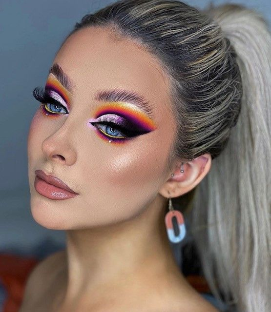

Tendecias
|
Después de meses con tiempo de sobra para mimarnos en casa, el cuidado de la piel cobra
protagonismo y se vuelve tendencia. El foco está en las rutinas faciales, tanto diurnas como
nocturnas, que además de corregir imperfecciones del rostro mantienen la hidratación en el
punto justo.
|
El maquillaje de ojos recurre a los colores fríos para voltear el mood cálido del verano.
Azules, púrpuras, verdes en distintas saturaciones (pastel o súper neón) estarán presentes
en las sombras, pero también en delineadores y hasta en algunas máscaras de pestañas.
Pops de color con alguno de estos tonos también será una forma de integrar la tendencia.
|
 |
 |